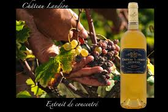
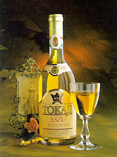
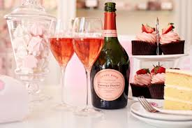

DESERT WINE
|  | SAUTERNESThe golden wine of the Sauternes region in Bordeaux, these wines are made with botrytis-affected Semillon grapes and produce a rich, honeyed concoction with an amazing balance of sweetness and acidity. Don't discount Sauternes' neighbor, Barsac, or even the region across the river, Loupiac. Made in the same style, wines from both regions sometimes carry a lower price tag but deliver the same quality. |
 |
ICE WINEIce wines are made from grapes that are affected by botrytis and then picked in the dead of winter. The grapes shrivel and then freeze, concentrating the sugar and protecting the grapes. Ice wine is a luscious nectar-like wine - the best are from Canada (Inniskillin) and Germany, made from grapes like Riesling and Vidal (found in Canada). |
|  | TOKAYThe Hungarian wine from the region of the same name. Drunk by European kings for centuries, Tokay is another botrytis-affected wine, but made in a different fashion than most. Tokay comes in levels of sweetness, called puttonyos. The higher the puttonyos, the sweeter the wine. For pure nectar, try Tokay Essencia, a wine so delectable, it's drunk by the spoonful. |
|  | STICKIESAustralian sweet wines made most often from botrytis-affected Muscat or Muscadelle. Called stickies because that's what the juice is like. Typically a darker color, stickies are classically from Rutherglen and Glenrowan, in the Australian state of Victoria. |
 |
LATE HARVEST AND BOTRYTISSweet wines from some regions are frequently labeled as "late-harvest" It means the grapes were picked later than usual, with increased ripeness levels and sometimes with botrytis. You may see a wine called "botrysized," to indicate this. Late-harvest wines are made with grapes with a higher level of sugar. Some wines to find include: Beaumes-de-Venise, Alsace Vendage Tardive, Late-harvest Muscats. |